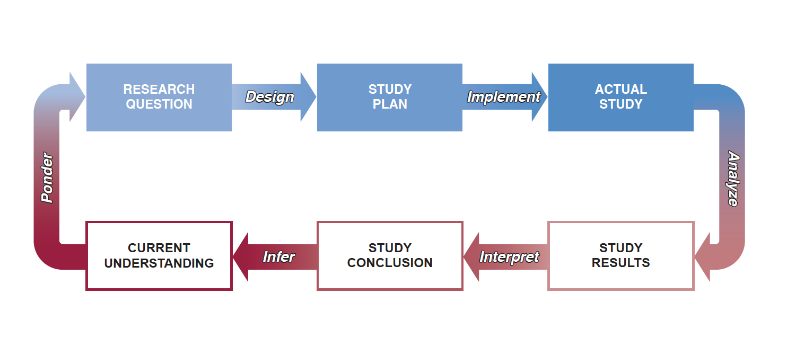
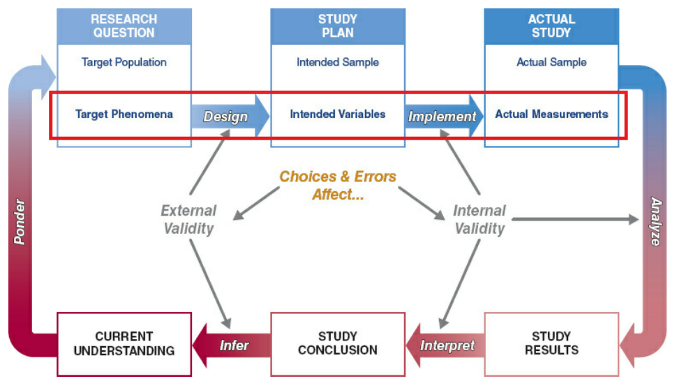
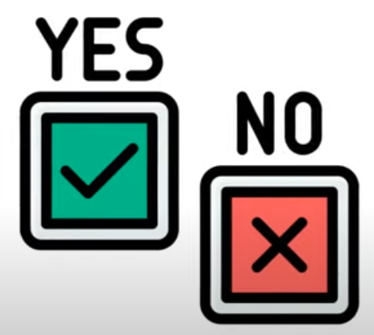
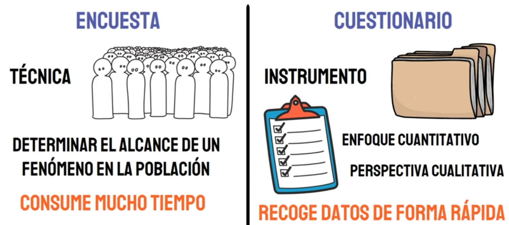

Instrumentos de recolección
Curso: Redacción de Protocolos de Investigación, 2022
Percy Soto-Becerra, M.D., M.Sc(c)
Instituto de Evaluación de Tecnologías en Salud e Investigación – IETSI, EsSalud
2022-11-02
Introducción al proceso de medición en investigación
Agenda
Introducción al proceso de medición en investigación
Instrumentos de medición
Técnicas de recojo de datos
Proceso de investigación

Fuente: Browner WS, et al. Designing Clinical Research. Wolters Kluwer, 5th Ed.
La medición en el proceso de investigación

Fuente: Browner WS, et al. Designing Clinical Research. Wolters Kluwer, 5th Ed.
Medición
Medición significa asignar números u otros símbolos a características de objetos de acuerdo con determinadas reglas preestablecidas.
No se mide al objeto, sino alguna de sus
características.El aspecto más importante es la
especificación de las reglaspara la asignación de números a determinadas características.Proceso de asignación debe ser
isomorfo, debe haber una correspondencia uno a uno entre los números y las características medidas.Además, las reglas de asignación deben
estandarizarse.
Medición en investigación biomédica
En investigación biomédica con enfoque cuantitativo,
medires un aspecto crucial del proceso.Medicionesdescriben fenómenos en términos que puedan ser analizados estadísticamente.La
validezdel estudio depende de cuán bien las variables diseñadas para el estudio representan el fenómeno de interés.Elegir la
escala de mediciónimpacta sobre el contenido de las mediciones realizadas.
¿Cuál es la meta del proceso de medición en investigación clínica?
La meta es maximizar exactitud de las medidas mediante mediciones que sean relativamente precisas e insesgadas.
Exactitud versus precisión
Fuente: Browner WS, et al. Designing Clinical Research. Wolters Kluwer, 5th Ed.
Instrumentos de medición
Agenda
Introducción al proceso de medición en investigación
Instrumentos de medición
Técnicas de recojo de datos
Instrumento de medición
Es una herramienta que se usa para medir una magnitud física.
Fuente: Wikipedia
-
El insturmento de medición debe tener ciertas características que evidencien su validez:
- precisión, exactitud, resolución, sensibilidad, especificidad, etc.
Los instrumentos pueden medir
magnitudes físicasoconstructosno observables.
Los instrumentos de medición ayudan a que el proceso de medición cumpla las características idóneas descritas.
Cuestionario
Documento que reúne una serie en preguntas en orden lógico para recabar datos de interés de los individuos que participan en encuestas, entrevistas u otros contextos.
De acuerdo a forma de aplicarse, los cuestionarios pueden ser:
Es
auto-aplicadocuando el participante revisa las preguntas y las responde.Es
hetero-aplicadocuando este proceso es asistido por unaplicadorquien recaba los datos mediante la técnica deentevista estructurada, también llamdacerrada de respuesta fija.
Los cuestionarios pueden ser usados por distintas técnicas de recolección de datos.
Tipos de cuestionario

Formas de aplicación de cuestionarios
Fuente: https://www.youtube.com/watch?v=5MT1gqLR-kk
Preguntas de alternativa fija
Los cuestionarios están compuestos principalmente de
preguntas de alternativa fija, las cuales requieren que el encuestado elija entre un conjunto predeterminado de respuestas.Algunos ejemplos de preguntas de alternativa fija en cuestionarios:
1 Ejemplo
2 Ejemplo
Técnicas de recojo de datos
Agenda
Introducción al proceso de medición en investigación
Instrumentos de medición
Técnicas de recojo de datos
Técnicas de recojo de datos
Encuesta
Observación
Entrevista
Grupo focal
Formularios / Fichas de recolección de datos
Encuesta
La encuesta es una técnica que utiliza el interrogatorio a los participantes para obtener los datos requeridos para el estudio.
Por lo general el interrogatorio es
estructurado.Se hace uso de un
cuestionario, principalmente depreguntas de alternativa fijaocerrada.A menudo implica el uso de
técnicas estadísticasy diseños muestrales.
Encuesta versus cuestionario
Fuente: https://www.youtube.com/watch?v=5MT1gqLR-kk
Ventajas y desventajas de la encuesta
Ventajas
1 Es fácil de aplicar.
2 Datos obtenidos son más confiables que observación, grupo focal u otros tipos de entrevista porque las respuestas se limitan a las alternativas planteadas.
- Preguntas de alternativas fija reducen la variabilidad de los resultados que habría por las diferencias entre los encuestadores.
3 Codificación, análisis e interpretación son relativamente sencillos.
[Desventajas]]{.story2}
1 Tal vez los participantes no estén dispuestos o sean incapaces de brindar la informaicón deseada.
2 Es posible que los participantes no deseen responder si la información es delicada, personal o sujeto a deseabilidad social.
3 Las preguntas estructuradas y alternativas de respuesta fija pueden ocasionar pérdida de validez de cierto tipos de datos, como creencias y sentimientos.
4 No siempre es fácil redactar las preguntas de manera apropiada: diseño de cuestionarios puede ser complejo.
Observación
Es una técnica de recojo de datos que utiliza el registro de patrones de conducta de personas, objetos y sucesos de una forma sistemática para obtener información sobre el fenómeno de interés.
Probablemente sea el
segundo tipode técnicamás utilizadadespués de la encuesta.El observador
no se comunicacon las personas que observani las interroga.-
Los datos se pueden registrar…
Conforme ocurren los sucesos.
Registro de eventos pasados.
Observación estructurada versus no estructurada
Estructurada
Si el investigador especifica con detalle lo que se va a observar y la forma en que se registrarán las mediciones. Se hace uso de alguna
ficha de recolección de datos.Adecuada cuando problema está claramente definido y se especifica la información buscada.
Los detalles al fenómeno a estudiar se puedne identificar con claridad y podría ser usada para investigación concluyente.
No estructurada
Es si el observador supervisa todos los aspectos del fenómeno que parecen ser relevantes al problema en cuestión.
Apropiada cuando aún no se ha definido el problema con precisión y se requiere flexibilidad para identificar componentes fundamentales del problema y para formular hipótesis.
Alto riesgo de potencial sesgo del observador.
Los hallazgos deben tratarse como hipótesis a comprobar y no como concluyentes.
Observación encubierta y abierta
Encubierta
Los participantes no están conscientes de que se les observa.
Encubrimiento permite que personas se comporten con naturalidad.
Se pueden usar diversas estrategias: ventanas de una sola vista, cámaras ocultas u otros dispositivos inadvertidos, ‘engaño’, etc.
Los observadores se pueden hacer pasar por sujetos comunes y corrientes.
Abierta
Los participantes saben que están siendo observados.
-
Existe el riesgo de que el saberse observado modifique la conducta de los participantes:
- ¿efecto del observador es mínimo y de poca duración? o
- ¿efecto es significativo?
Observación natural y artifical
Natural
Registro de la conducta tal como ocurre en el ambiente.
Su ventaja es que el fenómeno observado se reflejará con mayor exactitud.
Su desventaja es que es que puede costar más esperar que ocurra el evento y es más difícil medir el fenómeno en un ambiente natural.
Artificial
Implica el registro de los datos en un ambiente artificial creado para simular el ambiente natural.
La ventja es que puede ser más fácil medir el fenómeno y esperar que ocurra.
La desventaja es que el ambiente artificial puede alterar el comportamiento natural de los participantes.
Asimismo, puede ser más costoso implementar un ambiente artificial.
Observación personal versus mecánica
Personal
- Estrategia de investigación por observación en la cual los seres humannos registran el fenómeno bajo observación en el momento en que ocurre.
Mecánica
- Estrategia de investigación por observación en la cual dispositivos, en vez de seres humanos, registran el fénomeno bajo observación.
Etrevista
Técnica de recolección de datos que utiliza la conversación entre dos personas para recabar información.
Pueden ser
directascuando se aplican al sujeto de interés.Pueden ser
indirectascuando se aplican a alguna otra persona cercana al sujeto de interés que cuente con la información.
Tipos de entrevista de acuerdo a estructura
Existe varias formas de aplicarse:
Entrevistas estructuradas: O cerrada de respuesta fija. Muy usado en encuestas.Entrevistas no estructuradas: No hay preguntsa predeterminadas. Puede haber o ono una lista de temas abiertos. Muy usado en investigación cualitativa.Entrevistas semiestructuradas: Intermedio. Se hace las mismas preguntas abiertas a todos los entrevistados, pero se deja abierta las respuestas.
Grupo focal
Es una entrevista, de forma no estructurada y natural, en el que un moderador capacitado realiza a un pequeño grupo de personas.
El moderador guía la discusión.
El principal propósito de los grupos focales es obtener información al escuchar a un gurpo de personas sobre los temas de interés para el investigador.
Su valor reside en los hallazgos inesperados que, a menudo, se obtienen de una discusión grupal que fluye libremente.
Formularios / Fichas de recolección de datos
Un formulario es un documento, físico o digital, elaborado par que un usuario introduzca datos estructurados en campos correspondientes, para ser almacenados y procesados posteriormente.
Los
cuestionariosson un tipo deformularioen el que se recoje los datos brindados por el participante medianteauto-llenadooentrevista estructurada.Las
listas de cotejoeinventarios, así como fichas de observación estructurada también son ejemplos de estos.-
Otros datos no necesariamente son brindados directamente por el participante:
- Datos en historias clínicas físicas, resultados de laboratorio, imágenes, etc.
@psotob91
https://github.com/psotob91
percys1991@gmail.com
Programa de Formación Científica: Redacción de Protocolos de Investigación-2022